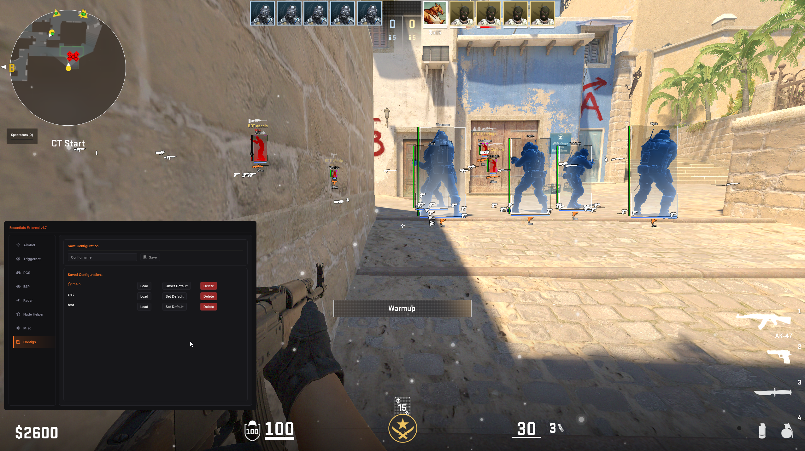

Aimbot & Trigger
Aimbot, Triggerbot, Magnetic Triggerbot, Autowall và RCS độc lập; có thể tinh chỉnh theo nhóm vũ khí.
Trang riêng cho bản VN-KEEN-ESSENTIALS. Bản tải hiện tại là một file chạy duy nhất, lưu sẵn cấu hình box tắt; skeleton, item ESP và các tính năng hỗ trợ khác được giữ nguyên theo gói phân phối.
LicenseGate • Key VN-KEEN-AIM • Bản đóng gói 03/10/2026
Thông tin bản tải & mã SHA-256
Nút tải kiểm tra SHA-256 trước khi lưu tệp. Xác minh toàn vẹn không thay thế kiểm tra bảo mật. Nếu báo tệp đã thay đổi, dừng chạy và liên hệ hỗ trợ; không tắt phần mềm bảo vệ.
Giá gói ngày / tháng / vĩnh viễn giống bản SKIN, nhưng key và scope là riêng biệt.

Danh sách dưới đây được đối chiếu từ README của release Essentials và ảnh minh họa. Khả năng hoạt động có thể thay đổi theo bản CS2, offset và cấu hình máy.
Aimbot, Triggerbot, Magnetic Triggerbot, Autowall và RCS độc lập; có thể tinh chỉnh theo nhóm vũ khí.
Tên, máu, vũ khí, skeleton, Item ESP, Chams và offscreen arrows. Gói VN-KEEN lưu box ở mức tắt.
Radar/minimap 2D, Lineup Helper và Grenade Prediction để quan sát thông tin trên bản đồ.
Bomb timer, bán kính nổ, thông tin gỡ bom và danh sách spectator trong trận.
Kill effect, bullet tracers, world particles và tùy chọn OBS stream proof theo công bố của tác giả.
Tạo, lưu, tải cấu hình; đặt cấu hình mặc định và đặt thông số riêng cho từng nhóm vũ khí.
Bản ZIP Essentials hiện tại được đóng gói theo thiết lập bạn đã chốt: alpha/màu box bằng 0, độ dày bằng 0; không đưa kích thước về 0 để tránh tạo chấm. Skeleton/head circle, item ESP và các thành phần khác vẫn giữ theo cấu hình.
VN-KEEN-AIM-••••-••••-••••-••••
Key AIM chỉ dành cho VN-KEEN-ESSENTIALS. Key VN-KEEN-SKIN-VANTIX không dùng để mở Essentials.
ĐẾN BẢNG GIÁ & MUA KEYChỉ thử nghiệm offline với bot. Phần mềm overlay/memory reading có thể vi phạm điều khoản CS2 và gây khóa tài khoản. Tính năng do release tác giả công bố không phải cam kết hoạt động trên mọi phiên bản.